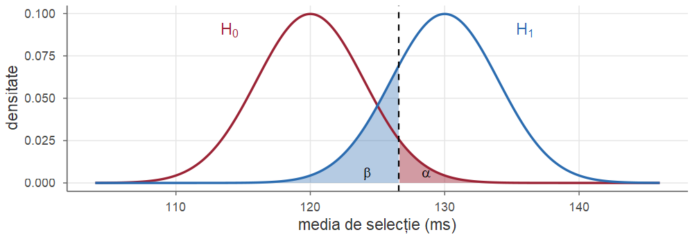
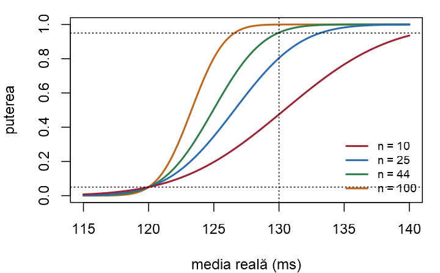
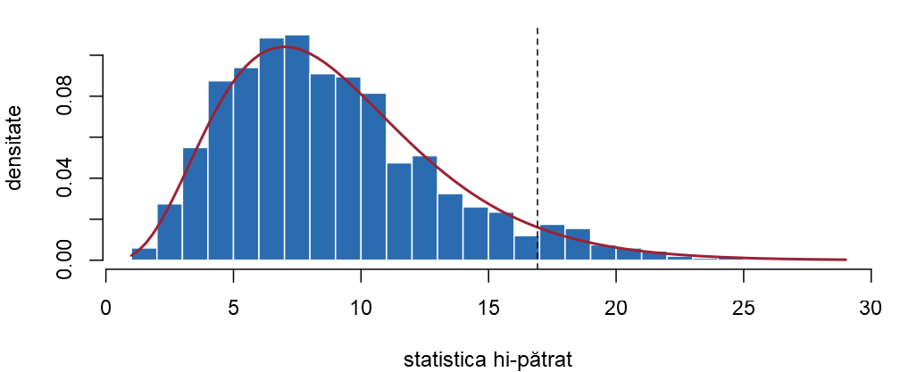

Seminarul 13. Testarea ipotezelor statistice
Probabilități și Statistică · Seminarul 13 (seminar și laborator)
Alexandru Amărioarei
Universitatea din București · Facultatea de Matematică și Informatică · 2026–2027
Planul seminarului și laboratorului
Este versiunea nouă a unui serviciu mai lentă decât cea veche? Produce un generator cifre uniforme? La astfel de întrebări „da sau nu” răspundem cu un test statistic (Cursul 13): fiecare test este efectuat întâi de mână, apoi în R, iar nivelul și puterea lui sunt verificate prin simulare.
- Breviar: noțiunile și testele din Cursul 13 și instrumentele R ale ședinței.
- Erori, nivel de semnificație și putere: erorile și puterea testului z, regiunea critică a unui test binomial, p-valoarea și repartiția ei.
- Teste pentru o populație normală: testul t pas cu pas, o decizie luată în trei moduri, testul \(\chi^2\) pentru varianță.
- Compararea a două populații: testul F, testul t și testul Welch, date pereche, nivelul testului cu varianțe egale.
- Teste pentru proporții și testul hi-pătrat: una și două proporții, testul de concordanță.
Fiecare exercițiu: Seminar rezolvarea matematică, apoi Laborator rezolvarea în R.
Obiective
La sfârșitul ședinței studentul trebuie să poată:
- formula ipotezele \(H_0\) și \(H_1\), determina regiunea critică a unui test și calcula probabilitățile celor două erori, puterea și volumul de eșantion necesar pentru o putere dată;
- calcula și interpreta corect o p-valoare și lua aceeași decizie în trei moduri echivalente: cu valoarea critică, cu p-valoarea și cu intervalul de încredere;
- efectua de mână testele \(z\), \(t\) și \(\chi^2\) pentru o populație normală, testele pentru două eșantioane (testul \(F\), testul \(t\) cu varianțe egale, testul Welch, date pereche), testele pentru una și două proporții și testul \(\chi^2\) al lui Pearson;
- folosi funcțiile
t.test,var.test,binom.test,prop.testșichisq.test, citi fiecare rând al rezultatului afișat și extrage componentele unui obiecthtest; - verifica prin simulare nivelul și puterea unui test și recunoaște situațiile în care un test nu își păstrează nivelul (date care nu sunt normale, varianțe diferite, multe teste efectuate deodată).
Breviar: ipoteze, erori, p-valoare
Breviar
Din Cursul 13 (cuantilele sunt inferioare, ca în R):
- Ipoteze și test (Definițiile 1 din Cursul 13 și 2 din Cursul 13): \(H_0\) („nimic nu s-a schimbat”) contra \(H_1\) (ceea ce vrem să punem în evidență); respingem \(H_0\) dacă statistica de test cade în regiunea critică.
- Erori, nivel, putere (Definiția 3 din Cursul 13): eroare de tip I — respingem \(H_0\) deși este adevărată (probabilitate cel mult \(\alpha\), nivelul de semnificație); eroare de tip II — nu respingem \(H_0\) deși este falsă (probabilitate \(\beta\)). Puterea: \(\pi(\theta)=\PP_\theta(\text{respingem }H_0)=1-\beta(\theta)\).
- Volumul eșantionului pentru testul \(z\) unilateral, cu puterea \(1-\beta\) la abaterea \(\delta\) (Secțiunea 11 din Cursul 13): \(n\ge\big(\frac{(z_{1-\alpha}+z_{1-\beta})\,\sigma}{\delta}\big)^2\).
- p-valoarea (Definiția 4 din Cursul 13): probabilitatea, sub \(H_0\), a unui rezultat cel puțin la fel de extrem ca cel observat; respingem \(H_0\) la nivelul \(\alpha\) dacă și numai dacă \(p\le\alpha\). Sub \(H_0\), p-valoarea este \(\Unif(0,1)\) (Propoziția 5 din Cursul 13).
- Dualitatea (Teorema 6 din Cursul 13): testul de nivel \(\alpha\) respinge \(H_0:\theta=\theta_0\) exact atunci când \(\theta_0\) nu se află în intervalul de încredere de nivel \(1-\alpha\).
Breviar: teste pentru populații normale
Breviar (continuare)
Statisticile de test și repartițiile lor sub \(H_0\) (Secțiunea 8 din Cursul 13; Teoremele 23 din Cursul 8 și 26 din Cursul 8): \[ \begin{array}{ll} \sigma\text{ cunoscut: }\ Z=\dfrac{\Xbar-\mu_0}{\sigma/\sqrt n}\sim\Norm(0,1) & \quad\sigma\text{ necunoscut: }\ T=\dfrac{\Xbar-\mu_0}{S_n/\sqrt n}\sim\Stud{n-1}\\[2.4ex] \text{varianța: }\ \chi^2=\dfrac{(n-1)S_n^2}{\sigma_0^2}\sim\chisq{n-1} & \quad\text{două varianțe: }\ F=\dfrac{S_1^2}{S_2^2}\sim\Fish{n_1-1}{n_2-1}\\[2.4ex] \text{varianțe egale: }\ T=\dfrac{\bar X-\bar Y}{S_p\sqrt{\frac1{n_1}+\frac1{n_2}}}\sim\Stud{n_1+n_2-2} & \quad S_p^2=\dfrac{(n_1-1)S_1^2+(n_2-1)S_2^2}{n_1+n_2-2}\\[3ex] \text{Welch: }\ T_W=\dfrac{\bar X-\bar Y}{\sqrt{\frac{S_1^2}{n_1}+\frac{S_2^2}{n_2}}}\approx\Stud{\nu} & \quad\text{date pereche }(D_i=X_i-Y_i)\text{: }\ T=\dfrac{\bar D}{S_D/\sqrt n}\sim\Stud{n-1} \end{array} \]
Breviar: regiuni critice, proporții, testul hi-pătrat
Breviar (continuare)
- Regiunile critice de nivel \(\alpha\): pentru \(H_1:\theta\ne\theta_0\) respingem dacă statistica depășește, în modul, cuantila de ordin \(1-\frac\alpha2\) (pentru \(\chi^2\) și \(F\): sub cuantila \(\frac\alpha2\) sau peste cuantila \(1-\frac\alpha2\)); pentru \(H_1:\theta>\theta_0\), dacă depășește cuantila de ordin \(1-\alpha\); pentru \(H_1:\theta<\theta_0\), dacă este sub cuantila de ordin \(\alpha\).
- O proporție (Secțiunea 9 din Cursul 13): sub \(H_0:p=p_0\), \(Z=\dfrac{\hat p-p_0}{\sqrt{p_0(1-p_0)/n}}\approx\Norm(0,1)\); pentru \(n\) mic: testul binomial exact.
- Două proporții: sub \(H_0:p_1=p_2\), \(Z=\dfrac{\hat p_1-\hat p_2}{\sqrt{\hat p(1-\hat p)\big(\frac1{n_1}+\frac1{n_2}\big)}}\approx\Norm(0,1)\), cu proporția comună \(\hat p=\dfrac{x_1+x_2}{n_1+n_2}\).
- Testul \(\chi^2\) al lui Pearson (Teorema 13 din Cursul 13): \(\chi^2=\displaystyle\sum_{j=1}^k\frac{(O_j-E_j)^2}{E_j}\approx\chisq{k-1-r}\) sub \(H_0\), unde \(O_j\) sunt frecvențele observate, \(E_j=np_j^0\) cele așteptate și \(r\) numărul parametrilor estimați din date; respingem pentru valori mari; condiție: \(E_j\ge5\).
Breviar: instrumentele R ale ședinței
Instrumente R folosite azi
- de mână:
pnorm,pt,pchisq,pf(p-valori);qnorm,qt,qchisq,qf(valori critice);pbinom; t.test(x, mu = mu0)— testul \(t\) pentru o medie;alternative="two.sided"(implicit),"less"sau"greater"descrie ipoteza alternativă;conf.level— nivelul intervalului afișat;t.test(x, y)— testul Welch;var.equal = TRUE— varianțe egale;paired = TRUE— date pereche;var.test(x, y)— testul \(F\);binom.test(x, n, p = p0)— testul binomial exact;prop.test(x, n, p = p0)— aproximarea normală (implicit, cu corecție de continuitate);prop.test(c(x1, x2), c(n1, n2))— două proporții;chisq.test(O)— testul de concordanță;power.prop.test(...)— puterea sau volumul;- toate întorc un obiect
htest:$statistic,$parameter,$p.value,$conf.int; replicate(B, expr)— prin simulare: nivelul (date sub \(H_0\)) sau puterea (date sub \(H_1\));- funcțiile scrise astăzi:
putere_z,erori,pval_z,nivel_var,nivel_doua,test_cifre.
Erori, nivel de semnificație și putere
Un serviciu mai lent după actualizare? Erorile și puterea testului z
Exercițiul 1 (Un serviciu mai lent după actualizare? Erorile și puterea testului z)
Timpul de răspuns al unui serviciu web (în ms) are, în funcționare normală, media \(\mu_0=120\) și abaterea standard \(\sigma=20\). După instalarea unei versiuni noi se măsoară \(n=25\) de timpi de răspuns, presupuși independenți și repartizați \(\Norm(\mu,\sigma^2)\), cu \(\sigma=20\) cunoscut. Testăm \(H_0:\mu=120\) contra \(H_1:\mu>120\) (versiunea nouă este mai lentă) cu regula: respingem \(H_0\) dacă \(\Xbar\ge c\).
- Determinați valoarea critică \(c\) pentru nivelul \(\alpha=0.05\). Ce înseamnă, aici, cele două erori?
- Dacă versiunea nouă are în realitate media \(\mu=130\) ms, cu ce probabilitate \(\beta\) trece neobservată încetinirea? Care este puterea testului?
- Arătați că funcția putere este \(\pi(\mu)=1-\Phi\big(z_{1-\alpha}-\frac{(\mu-\mu_0)\sqrt n}{\sigma}\big)\) și calculați \(\pi(\mu)\) pentru \(\mu\in\{120,125,130,135\}\). Cum se schimbă \(\beta\) de la (b) dacă lucrăm cu \(\alpha=0.01\)?
- Câte cereri sunt necesare pentru ca o încetinire de \(10\) ms să fie detectată cu probabilitatea \(0.95\)?
- În R: scrieți funcția
putere_z, reprezentați-o grafic pentru \(n\in\{10,25,44,100\}\) și verificați prin simulare nivelul și puterea.
Erorile și puterea testului z — rezolvare (a)
Soluție
Seminar Modelul. Media a \(n=25\) de observații \(\Norm(\mu,20^2)\) este normală, cu media \(\mu\) și abaterea standard \(\frac{\sigma}{\sqrt n}=\frac{20}{5}=4\) (Teorema 11 din Cursul 8): \(\Xbar\sim\Norm(\mu,4^2)\).
(a) Nivelul este probabilitatea de a respinge \(H_0\) atunci când ea este adevărată, adică atunci când \(\mu=120\). Standardizăm: \[ \alpha=\PP_{120}(\Xbar\ge c)=1-\Phi\Big(\frac{c-120}{4}\Big)=0.05\iff\frac{c-120}{4}=z_{0.95}=1.645, \] de unde \(c=120+1.645\cdot4=126.58\). Respingem deci \(H_0\) dacă media celor \(25\) de timpi este cel puțin \(126.58\) ms; echivalent, dacă \(Z=\frac{\Xbar-120}{4}\ge1.645\).
- Eroarea de tip I: versiunea nouă nu este mai lentă, dar testul o declară mai lentă (o alarmă falsă); prin alegerea lui \(c\), ea apare în \(5\%\) din cazuri.
- Eroarea de tip II: versiunea nouă este mai lentă, dar testul nu observă.
Erorile și puterea testului z — rezolvare (b)
Soluție (continuare)
Seminar (b) Dacă \(\mu=130\), atunci \(\Xbar\sim\Norm(130,4^2)\) și nu respingem \(H_0\) atunci când \(\Xbar<126.58\): \[ \beta=\PP_{130}(\Xbar<126.58)=\Phi\Big(\frac{126.58-130}{4}\Big)=\Phi(-0.855)=1-\Phi(0.855)\approx0.196 . \] Puterea este \(\pi(130)=1-\beta\approx0.804\): o încetinire de \(10\) ms este detectată în aproximativ \(80\%\) din cazuri. În figură (densitatea lui \(\Xbar\) sub \(H_0\) și sub \(\mu=130\)): aria roșie este \(\alpha\), aria albastră este \(\beta\).
Erorile și puterea testului z — rezolvare (c)
Soluție (continuare)
Seminar (c) Pentru o medie \(\mu\) oarecare repetăm calculul, cu \(c=\mu_0+z_{1-\alpha}\frac{\sigma}{\sqrt n}\): \[ \pi(\mu)=\PP_\mu(\Xbar\ge c)=1-\Phi\Big(\frac{c-\mu}{\sigma/\sqrt n}\Big)=1-\Phi\Big(z_{1-\alpha}-\frac{(\mu-\mu_0)\sqrt n}{\sigma}\Big). \] Aici \(\frac{\sqrt n}{\sigma}=\frac14\), deci \(\pi(\mu)=1-\Phi\big(1.645-\frac{\mu-120}{4}\big)\): \[ \begin{array}{c|cccc} \mu & 120 & 125 & 130 & 135\\ \hline 1.645-\frac{\mu-120}{4} & 1.645 & 0.395 & -0.855 & -2.105\\ \pi(\mu) & 0.050 & 0.346 & 0.804 & 0.982 \end{array} \] În \(\mu=120\) puterea este chiar nivelul \(\alpha\), apoi crește spre \(1\): cu cât încetinirea este mai mare, cu atât este mai ușor de detectat.
Erorile și puterea testului z — rezolvare (c), (d)
Soluție (continuare)
Seminar Nivelul \(\alpha=0.01\). Valoarea critică urcă la \(c=120+2.326\cdot4=129.31\), iar \[ \pi(130)=1-\Phi(2.326-2.5)=\Phi(0.174)\approx0.569,\qquad\beta\approx0.431 . \] Micșorând probabilitatea alarmelor false de la \(5\%\) la \(1\%\), probabilitatea de a rata încetinirea crește de la \(0.196\) la \(0.431\): pentru \(n\) fixat, cele două erori nu pot fi micșorate simultan.
(d) Cerem \(\pi(130)\ge0.95\), adică \(\Phi\big(1.645-\frac{10\sqrt n}{20}\big)\le0.05\). Cum \(\Phi(x)\le0.05\) înseamnă \(x\le z_{0.05}=-1.645\), \[ 1.645-\frac{\sqrt n}{2}\le-1.645\iff\sqrt n\ge2\cdot3.29=6.58\iff n\ge43.3, \] deci \(n=44\) de cereri. Este formula din Secțiunea 11 din Cursul 13, cu \(z_{1-\alpha}=z_{1-\beta}=1.645\), \(\sigma=20\) și \(\delta=10\).
Erorile și puterea testului z — în R: funcția putere_z
Soluție
Laborator (e) putere_z transcrie formula de la (c). Regăsim \(c=126.58\), \(\beta=0.196\) (respectiv \(0.431\) pentru \(\alpha=0.01\)) și tabelul de la (c).
mu0 <- 120; sigma <- 20; n <- 25
prag <- mu0 + qnorm(0.95) * sigma / sqrt(n) # valoarea critică c
putere_z <- function(mu, n = 25, alpha = 0.05, mu0 = 120, sigma = 20)
1 - pnorm(qnorm(1 - alpha) - (mu - mu0) * sqrt(n) / sigma)
c(prag = prag, beta_130 = 1 - putere_z(130),
beta_130_alfa_0.01 = 1 - putere_z(130, alpha = 0.01))
rbind(mu = c(120, 125, 130, 135), putere = putere_z(c(120, 125, 130, 135)))#> prag beta_130 beta_130_alfa_0.01
#> 126.5794 0.1962 0.4311
#> [,1] [,2] [,3] [,4]
#> mu 120.00 125.0000 130.0000 135.0000
#> putere 0.05 0.3465 0.8038 0.9824Erorile și puterea testului z — în R: volumul și funcția putere
Soluție
Laborator Volumul de la (d) — cu \(43\) de cereri puterea este încă puțin sub \(0.95\) — și graficul funcției putere pentru patru volume: curve(putere_z(x, n = 100), 115, 140), apoi curve(putere_z(x, n = 44), add = TRUE) etc.
#> n_necesar putere_n_43 putere_n_44
#> 43.2887 0.9489 0.9527Toate curbele trec prin \((120,\ 0.05)\) și sunt cu atât mai abrupte, cu cât \(n\) este mai mare.

Erorile și puterea testului z — în R: simulare
Soluție
Laborator Generăm \(B=10^4\) eșantioane cu media reală mu și numărăm în câte dintre ele \(\Xbar\ge c\). Frecvențele sunt apropiate de valorile teoretice: nivelul \(0.05\) și puterile \(0.346\), \(0.804\) și \(0.95\) (pentru \(n=44\)).
set.seed(1301)
B <- 1e4
frecv_resp <- function(mu, n = 25) { # frecvența respingerii lui H0
medii <- replicate(B, mean(rnorm(n, mu, sigma))) # B medii de selecție
mean(medii >= mu0 + qnorm(0.95) * sigma / sqrt(n))
}
c(nivel = frecv_resp(120), putere_125 = frecv_resp(125),
putere_130 = frecv_resp(130), putere_130_n_44 = frecv_resp(130, n = 44))#> nivel putere_125 putere_130 putere_130_n_44
#> 0.0522 0.3491 0.8039 0.9558Un filtru anti-spam: regiunea critică a unui test binomial
Exercițiul 2 (Un filtru anti-spam: regiunea critică a unui test binomial)
Furnizorul unui filtru anti-spam susține că filtrul clasifică greșit cel mult \(10\%\) dintre mesaje. Pentru verificare se aleg la întâmplare \(n=20\) de mesaje, etichetate în prealabil de un om, și se numără mesajele \(Y\) clasificate greșit de filtru. Fie \(q\) probabilitatea ca un mesaj să fie clasificat greșit. Testăm \(H_0:q=0.1\) contra \(H_1:q>0.1\) cu regula: respingem \(H_0\) dacă \(Y\ge c\).
- Care este repartiția lui \(Y\)? Calculați nivelul \(\alpha(c)=\PP_{0.1}(Y\ge c)\) pentru \(c=4\) și \(c=5\). Care este cel mai mic prag \(c\) pentru care nivelul este cel mult \(0.05\)?
- Pentru pragul găsit, calculați probabilitatea erorii de tip II și puterea atunci când filtrul greșește, de fapt, la \(30\%\) dintre mesaje.
- Completați tabelul valorilor \(\alpha(c)\) și \(\beta(c)=\PP_{0.3}(Y<c)\) pentru \(c\in\{3,4,5,6,7\}\). Ce observați?
- Filtrul a greșit la \(6\) dintre cele \(20\) de mesaje. Care este decizia? Calculați p-valoarea.
- În R: verificați tabelul; determinați pragul, nivelul exact și puterea pentru \(n\in\{20,50,100,200\}\); verificați nivelul și puterea prin simulare.
Un filtru anti-spam — rezolvare (a)
Soluție
Seminar (a) Cele \(20\) de mesaje sunt clasificate independent, fiecare greșit cu probabilitatea \(q\), deci \(Y\sim\Bin(20,q)\) (Definiția 10 din Cursul 3): \(\PP_q(Y=j)=\binom{20}{j}q^j(1-q)^{20-j}\). Pentru \(q=0.1\) și, pentru punctul (b), pentru \(q=0.3\): \[ \begin{array}{c|ccccc} j & 0 & 1 & 2 & 3 & 4\\ \hline \PP_{0.1}(Y=j) & 0.1216 & 0.2702 & 0.2852 & 0.1901 & 0.0898\\ \PP_{0.3}(Y=j) & 0.0008 & 0.0068 & 0.0278 & 0.0716 & 0.1304 \end{array} \] Trecem la evenimentul contrar: \[ \begin{aligned} \alpha(4)&=1-\PP_{0.1}(Y\le3)=1-(0.1216+0.2702+0.2852+0.1901)=1-0.8670=0.1330,\\ \alpha(5)&=1-\PP_{0.1}(Y\le4)=1-(0.8670+0.0898)=0.0432 . \end{aligned} \] Cel mai mic prag cu nivelul cel mult \(0.05\) este \(c=5\). Nivelul exact este \(0.0432\), nu \(0.05\): statistica este discretă, iar între pragurile \(4\) și \(5\) nivelul „sare” de la \(0.133\) la \(0.043\).
Un filtru anti-spam — rezolvare (b), (c), (d)
Soluție (continuare)
Seminar (b) Dacă \(q=0.3\), nu respingem \(H_0\) atunci când \(Y\le4\): \(\beta=\PP_{0.3}(Y\le4)=0.0008+0.0068+0.0278+0.0716+0.1304\approx0.2375\), iar puterea este \(1-\beta\approx0.76\). Un filtru de trei ori mai slab decât cel promis este „prins” doar în trei cazuri din patru: \(20\) de mesaje sunt puține.
(c) Repetând calculul pentru celelalte praguri: \[ \begin{array}{c|ccccc} c & 3 & 4 & 5 & 6 & 7\\ \hline \alpha(c)=\PP_{0.1}(Y\ge c) & 0.3231 & 0.1330 & 0.0432 & 0.0113 & 0.0024\\ \beta(c)=\PP_{0.3}(Y\le c-1) & 0.0355 & 0.1071 & 0.2375 & 0.4164 & 0.6080 \end{array} \] Când pragul crește, \(\alpha\) scade, iar \(\beta\) crește: un prag sever (\(c=7\)) aproape că nu acuză pe nedrept un filtru bun, dar lasă să treacă \(61\%\) dintre filtrele slabe.
(d) \(y=6\ge5\), deci respingem \(H_0\) la nivelul \(0.05\). p-valoarea (Definiția 4 din Cursul 13) este \(p=\PP_{0.1}(Y\ge6)=\alpha(6)=0.0113\): am respinge \(H_0\) la orice nivel \(\alpha\ge0.0113\), dar nu și la nivelul \(0.01\).
Un filtru anti-spam — în R: tabelul erorilor
Soluție
Laborator (e) Funcția erori calculează cele două probabilități de eroare cu pbinom: \(\PP(Y\ge c)=1-\PP(Y\le c-1)\). Tabelul coincide cu cel de la (c).
#> [,1] [,2] [,3] [,4] [,5]
#> c 3.0000 4.0000 5.0000 6.0000 7.0000
#> alfa 0.3231 0.1330 0.0432 0.0113 0.0024
#> beta 0.0355 0.1071 0.2375 0.4164 0.6080Pentru un \(n\) oarecare, pragul este cel mai mic \(c\) cu \(\PP_{q_0}(Y\le c-1)\ge0.95\), adică qbinom(0.95, n, q0) + 1.
Un filtru anti-spam — în R: pragul pentru alte volume
Soluție
Laborator Nivelul exact este de fiecare dată sub \(0.05\), dar diferit de la un \(n\) la altul. Puterea crește repede cu \(n\): cu \(100\) de mesaje, un filtru cu rata de eroare \(0.2\) este detectat cu probabilitatea \(0.87\).
#> [,1] [,2] [,3] [,4]
#> n 20.0000 50.0000 100.0000 200.0000
#> c 5.0000 10.0000 16.0000 28.0000
#> alfa 0.0432 0.0245 0.0399 0.0434
#> putere_0.2 0.3704 0.5563 0.8715 0.9890
#> putere_0.3 0.7625 0.9598 0.9996 1.0000Un filtru anti-spam — în R: simulare și binom.test
Soluție
Laborator Verificăm cazul \(n=20\) prin simulare și calculăm p-valoarea de la (d) cu binom.test.
#> nivel putere p_valoare
#> 0.04364 0.76273 0.01125Frecvențele simulate sunt apropiate de \(0.0432\) și \(0.7625\), iar binom.test întoarce p-valoarea \(0.0113\) calculată de mână.
p-valoarea testului z și repartiția ei
Exercițiul 3 (p-valoarea testului z și repartiția ei)
Continuăm Exercițiul 1. Pentru cele \(n=25\) de cereri măsurate după actualizare s-a obținut media \(\xbar=127.6\) ms.
- Calculați p-valoarea testului \(H_0:\mu=120\) contra \(H_1:\mu>120\) și luați decizia la nivelurile \(0.05\) și \(0.01\). Ce p-valoare am fi obținut pentru alternativa bilaterală \(H_1:\mu\ne120\)?
- Înainte de a vedea datele, p-valoarea este o variabilă aleatoare: \(P=1-\Phi(Z)\), unde \(Z=\frac{\Xbar-120}{4}\). Arătați că, dacă \(H_0\) este adevărată, atunci \(\PP(P\le u)=u\) pentru orice \(u\in(0,1)\), adică \(P\sim\Unif(0,1)\).
- Arătați că, dacă media reală este \(\mu\), atunci \(\PP_\mu(P\le u)=1-\Phi\big(z_{1-u}-\frac{\mu-120}{4}\big)\), adică puterea testului de nivel \(u\). Evaluați pentru \(\mu=130\) și \(u\in\{0.01,0.05,0.10\}\).
- În R: simulați câte \(10^4\) p-valori pentru \(\mu=120\) și pentru \(\mu=130\), reprezentați histogramele și comparați frecvențele evenimentelor \(\{P\le u\}\) cu valorile de la (b) și (c).
p-valoarea testului z — rezolvare (a)
Soluție
Seminar (a) Statistica de test este \(z=\frac{127.6-120}{4}=1.9\). Alternativa este \(\mu>120\), deci „cel puțin la fel de extrem” înseamnă \(Z\ge1.9\): \[ p=\PP_{H_0}(Z\ge1.9)=1-\Phi(1.9)=0.0287 . \] Cum \(0.01<p\le0.05\), respingem \(H_0\) la nivelul \(0.05\), dar nu și la nivelul \(0.01\) — în acord cu valorile critice din Exercițiul 1: \(126.58\le127.6<129.31\).
Pentru alternativa bilaterală contează abaterile în ambele sensuri: \[ p=\PP(|Z|\ge1.9)=2\cdot0.0287=0.0574>0.05, \] iar \(H_0\) nu ar mai fi respinsă. De aceea alternativa se alege înainte de a vedea datele: a alege sensul după ce am văzut că \(\xbar>120\) înjumătățește pe nedrept p-valoarea.
p-valoarea testului z — rezolvare (b), (c)
Soluție (continuare)
Seminar (b) Funcția \(\Phi\) este strict crescătoare, deci \(P\le u\iff1-\Phi(Z)\le u\iff\Phi(Z)\ge1-u\iff Z\ge z_{1-u}\). Sub \(H_0\), \(Z\sim\Norm(0,1)\), deci \(\PP(P\le u)=\PP(Z\ge z_{1-u})=1-(1-u)=u\): funcția de repartiție \(\Unif(0,1)\) (Propoziția 5 din Cursul 13). În particular, \(\PP(P\le0.05)=0.05\): regula „respingem dacă \(p\le\alpha\)” are nivelul exact \(\alpha\).
(c) Dacă media reală este \(\mu\), atunci \(Z\sim\Norm(\delta,1)\) cu \(\delta=\frac{\mu-120}{4}\), iar \(Z-\delta\sim\Norm(0,1)\): \[ \PP_\mu(P\le u)=\PP_\mu(Z\ge z_{1-u})=\PP_\mu(Z-\delta\ge z_{1-u}-\delta)=1-\Phi(z_{1-u}-\delta), \] exact funcția putere din Exercițiul 1 (c), cu \(\alpha=u\). Pentru \(\mu=130\), \(\delta=2.5\): \[ \begin{array}{c|ccc} u & 0.01 & 0.05 & 0.10\\ \hline z_{1-u}-\delta & -0.174 & -0.855 & -1.218\\ \PP_{130}(P\le u) & 0.569 & 0.804 & 0.888 \end{array} \] Sub alternativă p-valorile nu mai sunt uniforme, ci se îngrămădesc lângă \(0\).
p-valoarea testului z — în R: funcția pval_z
Soluție
Laborator (d) Întâi p-valorile de la (a): regăsim \(0.0287\) și, bilateral, \(0.0574\). Apoi funcția pval_z, care generează \(B\) eșantioane cu media reală mu și întoarce cele \(B\) p-valori.
#> z p_dreapta p_bilateral
#> 1.90000 0.02872 0.05743p-valoarea testului z — în R: histogramele p-valorilor

Sub \(H_0\) histograma este plată (densitatea \(\Unif(0,1)\) este linia întreruptă); când media reală este \(130\), p-valorile se îngrămădesc lângă \(0\).
p-valoarea testului z — în R: frecvențele evenimentelor \(\{P\le u\}\)
Soluție
Laborator Sub \(H_0\), frecvența lui \(\{P\le u\}\) este aproximativ \(u\); când media reală este \(130\), frecvențele coincid cu puterile putere_z(130, alpha = u): peste \(80\%\) dintre p-valori sunt sub \(0.05\). p-valoarea nu este probabilitatea ca \(H_0\) să fie adevărată: chiar și când \(H_0\) este sigur adevărată, o p-valoare sub \(0.05\) apare, în medie, o dată la \(20\) de teste.
#> [,1] [,2] [,3] [,4]
#> prag 0.0100 0.0500 0.1000 0.5000
#> H0_simulat 0.0114 0.0519 0.1016 0.5021
#> H1_simulat 0.5610 0.8062 0.8901 0.9949
#> H1_teoretic 0.5689 0.8038 0.8885 0.9938Teste pentru o populație normală
Viteza de scriere a unui SSD: testul t pas cu pas
Exercițiul 4 (Viteza de scriere a unui SSD: testul t pas cu pas)
Producătorul unui SSD declară o viteză medie de scriere de \(500\) MB/s. Un laborator independent rulează același test de scriere de \(n=10\) ori și obține vitezele (în MB/s) \(492\), \(487\), \(508\), \(495\), \(481\), \(503\), \(490\), \(485\), \(504\), \(485\). Presupunem că măsurătorile sunt independente și repartizate \(\Norm(\mu,\sigma^2)\), cu \(\mu\) și \(\sigma\) necunoscute. Diferă viteza medie de cea declarată?
- Formulați ipotezele; precizați statistica de test și repartiția ei sub \(H_0\).
- Calculați \(\xbar\), \(s\) și valoarea observată a statisticii de test.
- Determinați regiunea critică la nivelul \(\alpha=0.05\) și luați decizia. Ce decizie luați la nivelul \(0.01\)?
- Încadrați p-valoarea între două valori, folosind cuantilele \(t_{9;0.975}=2.262\), \(t_{9;0.99}=2.821\) și \(t_{9;0.995}=3.250\).
- Construiți intervalul de încredere de nivel \(0.95\) pentru \(\mu\) și formulați concluzia în termenii problemei.
- În R: refaceți calculele pas cu pas, apoi cu
t.test; explicați fiecare rând al rezultatului afișat.
Testul t pas cu pas — rezolvare (a), (b)
Soluție
Seminar (a) Ipotezele. \(H_0:\mu=500\) (viteza medie este cea declarată) contra \(H_1:\mu\ne500\). Alternativa este bilaterală: înainte de măsurători, laboratorul nu are niciun motiv să excludă o abatere într-un sens sau în celălalt. Statistica de test. \(\sigma\) este necunoscut, deci folosim testul \(t\), cu \(n-1=9\) grade de libertate (Teorema 23 din Cursul 8 (d)): \[ T=\frac{\Xbar-500}{S_n/\sqrt n}\sim\Stud{9}\quad\text{sub }H_0 . \]
(b) Pentru a lucra cu numere mici scădem \(490\) din fiecare valoare: \(d_i=x_i-490\) sunt \(2\), \(-3\), \(18\), \(5\), \(-9\), \(13\), \(0\), \(-5\), \(14\), \(-5\), cu \(\sum d_i=30\) și \(\sum d_i^2=858\). Media este \(\xbar=490+\frac{30}{10}=493\). Suma pătratelor abaterilor de la medie nu se schimbă când scădem o constantă și se calculează cu Lema 5 din Cursul 8: \[ \sum_{i=1}^{10}(x_i-\xbar)^2=\sum d_i^2-n\,\bar d^{\,2}=858-10\cdot3^2=768,\qquad s^2=\frac{768}{9}=85.33,\qquad s=9.238 . \]
Testul t pas cu pas — rezolvare (b), (c), (d)
Soluție (continuare)
Seminar Eroarea standard a mediei este \(\frac{s}{\sqrt n}=\frac{9.238}{3.162}=2.921\), iar valoarea observată a statisticii \[ t=\frac{493-500}{2.921}=-2.396 : \] media măsurată se află la \(2.4\) erori standard sub valoarea declarată.
(c) Pentru alternativa bilaterală respingem \(H_0\) dacă \(|t|\ge t_{9;0.975}=2.262\). Cum \(|t|=2.396\ge2.262\), respingem \(H_0\) la nivelul \(0.05\). La nivelul \(0.01\) valoarea critică este \(t_{9;0.995}=3.250>2.396\): nu respingem.
(d) p-valoarea este \(p=\PP(|T|\ge2.396)=2\,\PP(T\ge2.396)\), cu \(T\sim\Stud9\). Valoarea \(2.396\) se află între \(t_{9;0.975}=2.262\) și \(t_{9;0.99}=2.821\), deci \(\PP(T\ge2.396)\) este între \(0.01\) și \(0.025\), iar \[
0.02<p<0.05 ,
\] în acord cu (c): \(p\le0.05\), dar \(p>0.01\). Valoarea exactă (în R, cu pt) este \(0.040\).
Testul t pas cu pas — rezolvare (e)
Soluție (continuare)
Seminar (e) Intervalul de încredere Student (Teorema 5 din Cursul 12) este \[ \xbar\pm t_{9;0.975}\frac{s}{\sqrt n}=493\pm2.262\cdot2.921=493\pm6.61=[486.39,\ 499.61]. \] Valoarea \(500\) nu se află în interval — exact ceea ce spune Teorema 6 din Cursul 13: testul bilateral de nivel \(0.05\) respinge \(\mu=500\) dacă și numai dacă \(500\) este în afara intervalului de nivel \(0.95\).
Concluzia: la nivelul de semnificație \(5\%\), datele arată că viteza medie de scriere diferă de cea declarată, fiind mai mică; ea se află, cu încrederea \(95\%\), între \(486.4\) și \(499.6\) MB/s.
Dovezile sunt moderate (\(p=0.04\); la nivelul \(1\%\) nu am fi respins \(H_0\)), iar diferența estimată, de \(7\) MB/s (adică \(1.4\%\)), este mică din punct de vedere practic: semnificația statistică nu spune nimic despre importanța diferenței.
Testul t pas cu pas — în R: pașii de mână
Soluție
Laborator (f) Întâi pașii de mână: pt(-abs(t), 9) este aria din stânga lui \(-|t|\), iar p-valoarea bilaterală este dublul ei.
#> media s es t t_critic p_valoare
#> 493.00000 9.23760 2.92119 -2.39629 2.26216 0.04014Aceleași valori ca la (b)–(d): \(\xbar=493\), \(s=9.238\), eroarea standard \(2.921\), \(t=-2.396\), valoarea critică \(2.262\); p-valoarea exactă este \(0.040\), între \(0.02\) și \(0.05\).
Testul t pas cu pas — în R: funcția t.test
Laborator t.test face toți pașii deodată; argumentul mu este valoarea \(\mu_0\) din ipoteza nulă.
Testul t pas cu pas — în R: rezultatul lui t.test, rând cu rând
Soluție
Laborator Rezultatul afișat se citește rând cu rând:
One Sample t-testșidata: x— testul efectuat (testul \(t\) pentru un eșantion) și datele folosite;t = -2.3963, df = 9, p-value = 0.04014— valoarea observată a statisticii, numărul gradelor de libertate (\(n-1\)) și p-valoarea: cele calculate de mână;alternative hypothesis: true mean is not equal to 500— ipoteza alternativă, aici bilaterală; R nu afișează decizia: o luăm noi, comparând p-valoarea cu \(\alpha\);95 percent confidence interval: 486.3918 499.6082— intervalul de încredere dual testului, cel de la (e);sample estimates: mean of x 493— estimația punctuală a mediei.
Testul t pas cu pas — în R: componentele obiectului htest
Soluție
Laborator Obiectul rez este o listă; componentele se extrag cu $. Pentru alternativa \(H_1:\mu<500\) p-valoarea este jumătate din cea bilaterală (\(0.020\)) — dar această alternativă trebuia aleasă înainte de a vedea datele. Intervalul de nivel \(0.99\) este mai lung și conține valoarea \(500\): la nivelul \(0.01\) nu respingem \(H_0\), ca la (c).
O decizie luată în trei moduri: testul t unilateral
Exercițiul 5 (O decizie luată în trei moduri: testul t unilateral)
Setul de date chickwts din R conține greutățile (în grame), la șase săptămâni, a \(71\) de pui hrăniți cu șase tipuri de furaj. Producătorul furajului pe bază de făină de carne (meatmeal) afirmă că puii hrăniți cu el depășesc, în medie, \(250\) g. Greutățile celor \(n=11\) pui din această grupă, presupuse independente și repartizate normal, sunt \(325\), \(257\), \(303\), \(315\), \(380\), \(153\), \(263\), \(242\), \(206\), \(344\), \(258\), cu \(\sum x_i=3046\) și \(\sum x_i^2=885\,586\).
- Formulați ipotezele potrivite pentru a susține cu date afirmația producătorului și calculați statistica de test.
- Luați decizia la nivelul \(\alpha=0.05\) în trei moduri: cu valoarea critică (\(t_{10;0.95}=1.812\)), cu p-valoarea (\(\PP(T\ge1.375)=0.0996\) pentru \(T\sim\Stud{10}\)) și cu marginea inferioară de încredere de nivel \(0.95\).
- Repetați pentru \(\alpha=0.10\) (\(t_{10;0.90}=1.372\)). De ce conduc cele trei criterii mereu la aceeași decizie?
- În R: efectuați testul cu
t.test, pentrumeatmealși pentru celelalte furaje; aplicați cele trei criterii pentru \(\alpha\in\{0.10,0.05,0.01\}\); verificați prin simulare că ele coincid și că testul are nivelul \(0.05\).
O decizie luată în trei moduri — rezolvare (a)
Soluție
Seminar (a) Afirmația pe care vrem să o susținem cu date se pune în ipoteza alternativă: \[ H_0:\mu=250\ \ (\text{sau }\mu\le250)\qquad\text{contra}\qquad H_1:\mu>250 . \] Calculăm \[ \xbar=\frac{3046}{11}=276.91,\qquad s^2=\frac{1}{10}\Big(885\,586-\frac{3046^2}{11}\Big)=\frac{885\,586-843\,465.1}{10}=4212.1, \] deci \(s=64.90\), eroarea standard \(\frac{s}{\sqrt{11}}=19.57\) și statistica testului \(t\) \[ t=\frac{276.91-250}{19.57}=1.375,\qquad\text{cu }T\sim\Stud{10}\text{ sub }H_0 . \] Alternativa este \(\mu>250\), deci respingem \(H_0\) pentru valori mari ale lui \(t\).
O decizie luată în trei moduri — rezolvare (b)
Soluție (continuare)
Seminar (b) Nivelul \(\alpha=0.05\):
- Valoarea critică: respingem dacă \(t\ge t_{10;0.95}=1.812\). Avem \(1.375<1.812\): nu respingem.
- p-valoarea: \(p=\PP(T\ge1.375)=0.0996>0.05\): nu respingem.
- Marginea de încredere: marginea inferioară de nivel \(0.95\) (Definiția 13 din Cursul 12) este \[\xbar-t_{10;0.95}\frac{s}{\sqrt n}=276.91-1.812\cdot19.57=276.91-35.47=241.44 .\] Cu încrederea \(95\%\) putem afirma doar că \(\mu\ge241.4\) g; valoarea \(250\) se află în intervalul \([241.44,\infty)\): nu respingem.
Deși media celor \(11\) pui este cu \(27\) g peste \(250\), datele nu sunt o dovadă suficientă la nivelul \(5\%\): greutățile sunt foarte variabile (\(s\approx65\) g), iar eșantionul este mic. „Nu respingem \(H_0\)” nu înseamnă că afirmația producătorului este falsă, ci că nu a fost dovedită.
O decizie luată în trei moduri — rezolvare (c)
Soluție (continuare)
Seminar (c) Pentru \(\alpha=0.10\): \(t=1.375\ge1.372\), deci respingem (la limită); \(p=0.0996\le0.10\); marginea inferioară de nivel \(0.90\) este \(276.91-1.372\cdot19.57=250.06>250\). Din nou cele trei criterii sunt de acord — și nu întâmplător.
Funcția \(x\mapsto\PP(T\ge x)\) este descrescătoare și ia valoarea \(\alpha\) în \(x=t_{n-1;1-\alpha}\), deci \[ \begin{aligned} p=\PP(T\ge t)\le\alpha&\iff t\ge t_{n-1;1-\alpha}\\ &\iff\frac{\xbar-\mu_0}{s/\sqrt n}\ge t_{n-1;1-\alpha}\iff\xbar-t_{n-1;1-\alpha}\frac{s}{\sqrt n}\ge\mu_0 . \end{aligned} \] Prima echivalență leagă p-valoarea de valoarea critică; ultima spune că respingem exact atunci când \(\mu_0\) se află sub marginea inferioară de încredere — este Teorema 6 din Cursul 13, în varianta unilaterală.
O decizie luată în trei moduri — în R: t.test
Soluție
Laborator (d) Pentru alternativa \(\mu>250\) folosim alternative = "greater". Regăsim \(t=1.375\), \(10\) grade de libertate și \(p=0.0996\); intervalul afișat de t.test este unilateral, \([241.44,\infty)\): capătul stâng este marginea inferioară de la (b). Aceeași afirmație pentru toate furajele (cu tapply): doar pentru casein și sunflower este susținută convingător.
x <- chickwts$weight[chickwts$feed == "meatmeal"]
tm <- t.test(x, mu = 250, alternative = "greater") # H1: mu > 250
c(tm$statistic, tm$parameter, p = tm$p.value, margine_inf = tm$conf.int[1])
round(tapply(chickwts$weight, chickwts$feed, function(v)
t.test(v, mu = 250, alternative = "greater")$p.value), 4)#> t df p margine_inf
#> 1.37514 10.00000 0.09956 241.44235
#> casein horsebean linseed meatmeal soybean sunflower
#> 0.0011 1.0000 0.9687 0.0996 0.5956 0.0001O decizie luată în trei moduri — în R: cele trei criterii
Soluție
Laborator Cele trei criterii, pentru trei niveluri: pe fiecare coloană, \(t_{\text{obs}}\ge t_{\text{critic}}\) exact atunci când \(p\le\alpha\) și exact atunci când marginea inferioară depășește \(250\); respingem numai pentru \(\alpha=0.10\).
#> [,1] [,2] [,3]
#> alfa 0.10000 0.05000 0.01000
#> t_obs 1.37514 1.37514 1.37514
#> t_critic 1.37218 1.81246 2.76377
#> p_valoare 0.09956 0.09956 0.09956
#> margine_inf 250.05783 241.44235 222.82689O decizie luată în trei moduri — în R: simulare
Soluție
Laborator \(5000\) de eșantioane sub \(H_0\): cele trei criterii iau mereu aceeași decizie; nivelul este \(\approx0.05\).
set.seed(1305)
dec <- replicate(5000, {
y <- rnorm(11, 250, 65) # H0 adevărată: mu = 250
r <- t.test(y, mu = 250, alternative = "greater")
c(critic = unname(r$statistic) >= qt(0.95, 10),
p_val = r$p.value <= 0.05, margine = r$conf.int[1] >= 250)
})
rowMeans(dec) # frecvența respingerilor
all(dec["critic", ] == dec["p_val", ] & dec["p_val", ] == dec["margine", ])#> critic p_val margine
#> 0.0504 0.0504 0.0504
#> [1] TRUEEste conexiunea suficient de stabilă? Testul hi-pătrat pentru varianță
Exercițiul 6 (Este conexiunea suficient de stabilă? Testul hi-pătrat pentru varianță)
Într-o videoconferință contează nu numai întârzierea medie a pachetelor, ci și variabilitatea ei (jitter). Un furnizor vrea să demonstreze că, pe conexiunea pe care o oferă, abaterea standard a întârzierii este mai mică decât \(5\) ms. Pentru \(n=25\) de pachete, abaterea standard de selecție a întârzierilor este \(s=3.6\) ms. Presupunem că întârzierile sunt independente și repartizate \(\Norm(\mu,\sigma^2)\).
- Formulați ipotezele și efectuați testul la nivelul \(\alpha=0.05\) (\(\chi^2_{24;0.05}=13.85\)). Ce decizie luați la nivelul \(0.01\) (\(\chi^2_{24;0.01}=10.86\))?
- Scrieți p-valoarea ca probabilitate și determinați marginea superioară de încredere de nivel \(0.95\) pentru \(\sigma\).
- Exprimați, cu ajutorul funcției de repartiție \(\chisq{24}\), puterea testului de la (a) atunci când \(\sigma=3.5\) ms.
- În R: calculați p-valoarea și puterea cu
pchisq. Apoi estimați prin simulare nivelul real al testului atunci când \(\sigma=5\), iar întârzierile sunt normale, uniforme sau exponențiale; comparați cu nivelul testului \(t\) pentru medie pe aceleași date.
Testul hi-pătrat pentru varianță — rezolvare (a)
Soluție
Seminar (a) Furnizorul vrea să demonstreze că \(\sigma<5\), deci aceasta este alternativa: \(H_0:\sigma=5\) (sau \(\sigma\ge5\)) contra \(H_1:\sigma<5\). Sub \(H_0\), \[ \chi^2=\frac{(n-1)S_n^2}{\sigma_0^2}=\frac{24\,S_n^2}{25}\sim\chisq{24} \] (Teorema 23 din Cursul 8 (c)). Alternativa este susținută de valori mici ale lui \(S_n^2\), deci respingem \(H_0\) dacă \(\chi^2\le\chi^2_{24;0.05}=13.85\). Valoarea observată este \[ \chi^2=\frac{24\cdot3.6^2}{25}=\frac{24\cdot12.96}{25}=\frac{311.04}{25}=12.44\le13.85, \] deci respingem \(H_0\): la nivelul \(5\%\), datele arată că abaterea standard a întârzierii este sub \(5\) ms. La nivelul \(0.01\), \(12.44>10.86\) și nu mai respingem.
Testul hi-pătrat pentru varianță — rezolvare (b), (c)
Soluție (continuare)
Seminar (b) Valorile „cel puțin la fel de extreme” sunt cele mai mici decât cea observată: \(p=\PP(\chi^2_{24}\le12.44)\); din (a) știm că \(0.01<p<0.05\). Pentru marginea superioară pornim de la \(\PP\big(\frac{(n-1)S_n^2}{\sigma^2}\ge\chi^2_{24;0.05}\big)=0.95\) și izolăm \(\sigma^2\): \[ \sigma^2\le\frac{(n-1)s^2}{\chi^2_{24;0.05}}=\frac{311.04}{13.85}=22.46,\qquad\text{adică}\qquad\sigma\le4.74\ \text{ms}. \] Marginea superioară este sub \(5\), în acord cu respingerea lui \(H_0\) (dualitatea, ca în Exercițiul 5).
(c) Respingem \(H_0\) dacă \(\frac{24S_n^2}{25}\le13.85\). Când abaterea standard reală este \(\sigma\), repartiția \(\chisq{24}\) o are variabila \(\frac{24S_n^2}{\sigma^2}\), așa că înmulțim inegalitatea cu \(\frac{25}{\sigma^2}\): \[ \pi(\sigma)=\PP_\sigma\Big(\frac{24S_n^2}{\sigma^2}\le13.85\cdot\frac{25}{\sigma^2}\Big)=\PP\Big(\chi^2_{24}\le\frac{346.2}{\sigma^2}\Big),\qquad\pi(3.5)=\PP\big(\chi^2_{24}\le28.26\big). \] Valoarea numerică o calculăm în R.
Testul hi-pătrat pentru varianță — în R: pchisq și qchisq
Soluție
Laborator (d) R nu are o funcție dedicată acestui test; îl calculăm direct, cu pchisq și qchisq.
#> chi2 critic p_valoare margine_sup putere_3.5
#> 12.44160 13.84843 0.02554 4.73923 0.75086p-valoarea este \(0.026\), marginea superioară \(4.74\), iar puterea în \(\sigma=3.5\) este \(0.75\): chiar dacă abaterea standard reală este cu \(30\%\) sub prag, \(25\) de pachete o dovedesc doar în trei cazuri din patru. Toate aceste calcule presupun date normale. Ce se întâmplă dacă nu sunt?
Testul hi-pătrat pentru varianță — în R: funcțiile nivel_var și nivel_t
Soluție
Laborator Simulăm situația-limită a ipotezei nule, \(\sigma=5\). nivel_var primește un generator și întoarce frecvența cu care testul „demonstrează” că \(\sigma<5\); nivel_t face același lucru pentru testul \(t\) bilateral al mediei reale mu.
set.seed(1306)
B <- 1e4
nivel_var <- function(gen) { # P(respingem), când de fapt sigma = 5
v <- replicate(B, var(gen(n))) # B varianțe de selecție
mean((n - 1) * v / sigma0^2 <= qchisq(0.05, n - 1))
}
nivel_t <- function(gen, mu) { # testul t bilateral pentru media mu
t <- replicate(B, { y <- gen(n); (mean(y) - mu) / (sd(y) / sqrt(n)) })
mean(abs(t) >= qt(0.975, n - 1))
}Testul hi-pătrat pentru varianță — în R: nivelul real
Soluție
Laborator Trei repartiții cu \(\sigma=5\): \(\Norm(40,5^2)\), \(\Unif(0,5\sqrt{12})\), \(\Exp(\frac15)\). Testul pentru varianță are nivelul \(0.05\) doar pentru date normale (uniforme: sub \(1\%\); exponențiale: peste \(20\%\)); testul \(t\) rămâne aproape de \(0.05\).
g_norm <- function(m) rnorm(m, 40, 5); g_exp <- function(m) rexp(m, 1 / 5)
g_unif <- function(m) runif(m, 0, 5 * sqrt(12))
rbind(test_varianta = c(normala = nivel_var(g_norm),
uniforma = nivel_var(g_unif),
exponentiala = nivel_var(g_exp)),
test_t = c(nivel_t(g_norm, 40), nivel_t(g_unif, 5 * sqrt(3)),
nivel_t(g_exp, 5)))#> normala uniforma exponentiala
#> test_varianta 0.0451 0.0084 0.2114
#> test_t 0.0502 0.0522 0.0778Compararea a două populații
Transmisie automată sau manuală: testul F, testul t și testul Welch
Exercițiul 7 (Transmisie automată sau manuală: testul F, testul t și testul Welch)
Setul de date mtcars din R conține, pentru \(32\) de modele de automobile, consumul în mile pe galon (mpg: valoare mare = mașină economică) și tipul transmisiei (am: \(0\) = automată, \(1\) = manuală). Pentru cele două grupe, presupuse independente și normale: \[
\begin{array}{l|ccc}
& \text{volum} & \text{media} & \text{varianța de selecție}\\ \hline
\text{automată} & n_1=19 & \bar x=17.147 & s_1^2=14.699\\
\text{manuală} & n_2=13 & \bar y=24.392 & s_2^2=38.026
\end{array}
\]
- Testați la nivelul \(0.05\) egalitatea varianțelor (\(F_{18,12;0.025}=0.361\), \(F_{18,12;0.975}=3.108\)).
- Testați egalitatea mediilor cu testul \(t\) cu varianțe egale (\(t_{30;0.975}=2.042\)).
- Testați egalitatea mediilor cu testul Welch, cu \(\nu=\frac{(v_1+v_2)^2}{v_1^2/(n_1-1)+v_2^2/(n_2-1)}\) grade de libertate, unde \(v_i=\frac{s_i^2}{n_i}\).
- Comparați cele două teste. Pe care îl preferați? Ce concluzie trageți?
- În R: obțineți statisticile din tabel, apoi efectuați testele cu
var.testșit.test.
Testul F, testul t și testul Welch — rezolvare (a)
Soluție
Seminar (a) \(H_0:\sigma_1^2=\sigma_2^2\) contra \(H_1:\sigma_1^2\ne\sigma_2^2\). Sub \(H_0\), raportul varianțelor de selecție are repartiția \(\Fish{18}{12}\) (Teorema 26 din Cursul 8 (b)): \[ F=\frac{s_1^2}{s_2^2}=\frac{14.699}{38.026}=0.387 . \] Respingem \(H_0\) dacă \(F\le0.361\) sau \(F\ge3.108\). Cum \[ 0.361<0.387<3.108, \] nu respingem egalitatea varianțelor la nivelul \(0.05\) — dar la limită: varianța grupei cu transmisie manuală este de \(2.6\) ori mai mare, iar \(F\) este foarte aproape de valoarea critică inferioară.
Testul F, testul t și testul Welch — rezolvare (b)
Soluție (continuare)
Seminar (b) \(H_0:\mu_1=\mu_2\) contra \(H_1:\mu_1\ne\mu_2\). Varianța comună estimată este media ponderată a celor două varianțe: \[ s_p^2=\frac{18\cdot14.699+12\cdot38.026}{30}=\frac{264.58+456.31}{30}=24.03,\qquad s_p=4.902 . \] Eroarea standard a diferenței mediilor este \(s_p\sqrt{\frac1{19}+\frac1{13}}=4.902\cdot0.3599=1.764\), iar \[ t=\frac{17.147-24.392}{1.764}=\frac{-7.245}{1.764}=-4.11,\qquad|t|\ge t_{30;0.975}=2.042 . \] Respingem \(H_0\): diferența dintre medii este de peste patru erori standard.
Testul F, testul t și testul Welch — rezolvare (c), (d)
Soluție (continuare)
Seminar (c) Testul Welch nu presupune varianțe egale: fiecare medie contribuie cu varianța ei, \(v_1=\frac{14.699}{19}=0.774\) și \(v_2=\frac{38.026}{13}=2.925\). Eroarea standard este \(\sqrt{v_1+v_2}=\sqrt{3.699}=1.923\), deci \[ t_W=\frac{-7.245}{1.923}=-3.77,\qquad\nu=\frac{3.699^2}{\frac{0.774^2}{18}+\frac{2.925^2}{12}}=\frac{13.68}{0.0333+0.7130}=18.3 . \] Valoarea critică este \(t_{18.3;0.975}\approx2.10\) (între \(t_{19;0.975}=2.093\) și \(t_{18;0.975}=2.101\)); \(|t_W|=3.77\ge2.10\): respingem \(H_0\) și cu acest test.
(d) Concluzia nu depinde de test, dar testul Welch este mai prudent: eroare standard mai mare (\(1.923\) față de \(1.764\)) și mai puține grade de libertate (\(18.3\) față de \(30\)). Îl preferăm: testul \(F\) nu dovedește că varianțele sunt egale, iar grupa mai mică are varianța mai mare — situația în care testul cu varianțe egale este prea optimist (Exercițiul 9). Mașinile cu transmisie manuală parcurg, în medie, cu aproximativ \(7.2\) mile mai mult cu un galon; testul arată o diferență între cele două grupe, nu și cauza ei.
Testul F, testul t și testul Welch — în R: statisticile și var.test
Soluție
Laborator (e) Separăm cele două grupe și calculăm statisticile din enunț; apoi testul \(F\), cu var.test: regăsim \(F=0.387\), cu \(p=0.067\) (aproape de pragul \(0.05\)).
#> [,1] [,2]
#> volum 19.00 13.00
#> medie 17.15 24.39
#> varianta 14.70 38.03
#> F p_valoare
#> 0.38656 0.06691Testul F, testul t și testul Welch — în R: t.test
Soluție
Laborator Regăsim \(t=-4.11\) (\(30\) de grade de libertate) și \(t_W=-3.77\) (\(\nu=18.3\)); p-valoarea testului cu varianțe egale (\(0.0003\)) este de cinci ori mai mică decât a testului Welch (\(0.0014\)). Intervalul de nivel \(0.95\) pentru \(\mu_1-\mu_2\), \([-11.28,\ -3.21]\), nu conține \(0\): între \(3\) și \(11\) mile pe galon în favoarea transmisiei manuale.
t_egal <- t.test(aut, man, var.equal = TRUE) # varianțe egale
t_welch <- t.test(aut, man) # Welch (implicit)
rbind(egale = c(t_egal$statistic, t_egal$parameter, p = t_egal$p.value),
Welch = c(t_welch$statistic, t_welch$parameter, p = t_welch$p.value))
t_welch$conf.int[1:2] # interval pentru mu1 - mu2 (Welch)#> t df p
#> egale -4.106 30.00 0.000285
#> Welch -3.767 18.33 0.001374
#> [1] -11.28 -3.21Doi algoritmi pe aceleași fișiere: date pereche
Exercițiul 8 (Doi algoritmi pe aceleași fișiere: date pereche)
Două implementări ale unui algoritm de compresie — A (cea actuală) și B (cea nouă) — sunt rulate pe aceleași \(n=10\) fișiere de test, de dimensiuni foarte diferite. Timpii de rulare (în ms), fișier cu fișier: \[ \begin{array}{c|cccccccccc} \text{A} & 120 & 254 & 83 & 402 & 315 & 187 & 550 & 229 & 98 & 361\\ \text{B} & 114 & 243 & 85 & 383 & 307 & 182 & 526 & 219 & 97 & 348 \end{array} \]
- De ce nu sunt cele două eșantioane independente? Calculați diferențele \(d_i\) și testați, la nivelul \(0.05\), ipoteza că cele două implementări au același timp mediu (\(t_{9;0.975}=2.262\)).
- Un coleg tratează datele ca două eșantioane independente. Se dau mediile \(\bar a=259.9\) și \(\bar b=250.4\) și varianțele de selecție \(s_A^2=22\,332\) și \(s_B^2=20\,164\). Ce statistică obține cu testul Welch și ce decizie ia?
- Explicați diferența dintre (a) și (b) cu ajutorul formulei \(\Var(X-Y)=\Var(X)+\Var(Y)-2\,\Cov(X,Y)\).
- În R: efectuați ambele analize cu
t.test; estimați prin simulare puterea fiecăreia, pentru un model în care B este în medie cu \(10\) ms mai rapidă.
Date pereche — rezolvare (a)
Soluție
Seminar (a) Fiecare fișier este prelucrat de ambele implementări: un fișier mare cere timp mult și cu A, și cu B, deci timpii de pe aceeași coloană sunt puternic legați. Lucrăm cu diferențele \(d_i=a_i-b_i\), presupuse independente și repartizate \(\Norm(\mu_D,\sigma_D^2)\): \(6\), \(11\), \(-2\), \(19\), \(8\), \(5\), \(24\), \(10\), \(1\), \(13\), cu \(\sum d_i=95\) și \(\sum d_i^2=1457\).
Testăm \(H_0:\mu_D=0\) contra \(H_1:\mu_D\ne0\) cu testul \(t\) pentru un eșantion, aplicat diferențelor: \[ \begin{aligned} \bar d&=9.5,\qquad s_D^2=\frac{1457-10\cdot9.5^2}{9}=\frac{554.5}{9}=61.61,\qquad s_D=7.849,\\ t&=\frac{\bar d}{s_D/\sqrt n}=\frac{9.5}{7.849/\sqrt{10}}=\frac{9.5}{2.482}=3.83 . \end{aligned} \] Cum \(|t|=3.83\ge t_{9;0.975}=2.262\), respingem \(H_0\): implementarea B este mai rapidă, în medie cu \(9.5\) ms; intervalul de încredere de nivel \(0.95\) pentru \(\mu_D\) este \(9.5\pm2.262\cdot2.482=[3.9,\ 15.1]\).
Date pereche — rezolvare (b), (c)
Soluție (continuare)
Seminar (b) Pentru două eșantioane independente, eroarea standard a diferenței mediilor ar fi \[ \sqrt{\frac{s_A^2}{10}+\frac{s_B^2}{10}}=\sqrt{2233.2+2016.4}=65.19,\qquad t_W=\frac{259.9-250.4}{65.19}=0.146 . \] O statistică atât de aproape de \(0\) nu este semnificativă la niciun nivel uzual (\(p=0.89\)).
(c) Numărătorul este același (\(\bar a-\bar b=\bar d=9.5\)); diferă eroarea standard: \(2.48\) față de \(65.19\). Analiza de la (b) presupune covarianța nulă în \(\Var(A_i-B_i)=\sigma_A^2+\sigma_B^2-2\,\Cov(A_i,B_i)\). Din \(s_D^2=s_A^2+s_B^2-2s_{AB}\) rezultă însă \[ s_{AB}=\frac{22\,332+20\,164-61.6}{2}=21\,217.2,\qquad r=\frac{s_{AB}}{s_A\,s_B}=\frac{21\,217.2}{149.44\cdot142.00}\approx0.9998 . \] Aproape toată variația timpilor provine din diferențele dintre fișiere și este comună celor două implementări; scăzând timpii pereche, ea dispare (\(s_D^2=61.6\), față de \(s_A^2+s_B^2=42\,496\)).
Date pereche — în R: cele două analize
Soluție
Laborator (d) paired = TRUE cere analiza pe perechi (aceeași cu testul \(t\) aplicat diferențelor): \(t=3.83\), \(p=0.004\). Analiza greșită dă \(t=0.146\) și \(p=0.89\). Corelația celor două șiruri de timpi este practic \(1\).
tA <- c(120, 254, 83, 402, 315, 187, 550, 229, 98, 361)
tB <- c(114, 243, 85, 383, 307, 182, 526, 219, 97, 348)
per <- t.test(tA, tB, paired = TRUE) # corect: date pereche
ind <- t.test(tA, tB) # greșit: ignoră perechile
c(per$statistic, p_pereche = per$p.value,
p_diferente = t.test(tA - tB)$p.value, t_indep = unname(ind$statistic),
p_indep = ind$p.value, corelatie = cor(tA, tB))#> t p_pereche p_diferente t_indep p_indep corelatie
#> 3.827314 0.004044 0.004044 0.145729 0.885759 0.999852Date pereche — în R: puterea celor două analize
Soluție
Laborator Simulăm modelul: „dificultatea” \(m_i\) a fișierului \(i\) este uniformă între \(50\) și \(600\) ms; timpul lui A este \(m_i\) plus un zgomot \(\Norm(0,5^2)\), al lui B este \(m_i-10\) plus un zgomot independent. Analiza pe perechi detectează aproape de fiecare dată avantajul de \(10\) ms al lui B; cea care ignoră perechile, practic niciodată.
#> pereche independente
#> 0.9785 0.0000Când își pierde nivelul testul t cu varianțe egale
Exercițiul 9 (Când își pierde nivelul testul t cu varianțe egale)
Fie \(X_1,\dots,X_{n_1}\sim\Norm(\mu,\sigma_1^2)\) și \(Y_1,\dots,Y_{n_2}\sim\Norm(\mu,\sigma_2^2)\) două eșantioane independente cu aceeași medie: ipoteza \(H_0:\mu_1=\mu_2\) este adevărată, deci un test de nivel \(0.05\) ar trebui să o respingă în \(5\%\) din cazuri. Testul cu varianțe egale folosește statistica \(T=\dfrac{\bar X-\bar Y}{\sqrt{S_p^2\big(\frac1{n_1}+\frac1{n_2}\big)}}\).
- Calculați \(\Var(\bar X-\bar Y)\) și media cantității \(S_p^2\big(\frac1{n_1}+\frac1{n_2}\big)\), cu care testul estimează această varianță (folosiți \(\E[S_1^2]=\sigma_1^2\) și \(\E[S_2^2]=\sigma_2^2\)).
- Evaluați cele două mărimi și raportul lor \(r\) în situațiile: (i) \(n_1=10\), \(n_2=40\), \(\sigma_1=\sigma_2=1\); (ii) \(n_1=10\), \(\sigma_1=4\) și \(n_2=40\), \(\sigma_2=1\); (iii) \(n_1=10\), \(\sigma_1=1\) și \(n_2=40\), \(\sigma_2=4\); (iv) \(n_1=n_2=25\), \(\sigma_1=4\), \(\sigma_2=1\).
- Înlocuind \(S_p^2\) cu media sa, \(T\) este aproximativ \(\Norm(0,r)\). Estimați nivelul real al testului, care respinge \(H_0\) dacă \(|T|\ge t_{48;0.975}=2.011\), în fiecare situație.
- În R: estimați prin simulare nivelul testului cu varianțe egale și al testului Welch în cele patru situații.
Nivelul testului cu varianțe egale — rezolvare (a)
Soluție
Seminar (a) Mediile celor două eșantioane sunt independente, deci varianțele se adună (Teorema 26 din Cursul 8 (a)): \[ \Var(\bar X-\bar Y)=\frac{\sigma_1^2}{n_1}+\frac{\sigma_2^2}{n_2}. \] Media varianței comune este media ponderată a celor două varianțe, cu ponderile \(n_1-1\) și \(n_2-1\): \[ \E\Big[S_p^2\Big(\frac1{n_1}+\frac1{n_2}\Big)\Big]=\frac{(n_1-1)\sigma_1^2+(n_2-1)\sigma_2^2}{n_1+n_2-2}\Big(\frac1{n_1}+\frac1{n_2}\Big). \] În varianța reală, \(\sigma_1^2\) este împărțită la \(n_1\): eșantionul mic contează mult. În \(S_p^2\), dimpotrivă, eșantionul mare are ponderea mare. Când varianțele diferă, cele două expresii nu mai coincid.
Nivelul testului cu varianțe egale — rezolvare (b)
Soluție (continuare)
Seminar (b) Notăm cu \(r\) raportul dintre varianța reală și media estimării ei. \[ \begin{array}{c|cccc} & \text{(i)} & \text{(ii)} & \text{(iii)} & \text{(iv)}\\ \hline \text{varianța reală }\frac{\sigma_1^2}{n_1}+\frac{\sigma_2^2}{n_2} & 0.125 & 1.625 & 0.5 & 0.68\\[0.6ex] \text{media lui }S_p^2 & 1 & \frac{9\cdot16+39}{48}=3.81 & \frac{9+39\cdot16}{48}=13.19 & 8.5\\[0.6ex] \text{media estimării} & 0.125 & 0.477 & 1.648 & 0.68\\[0.6ex] r & 1 & 3.41 & 0.303 & 1 \end{array} \] (pentru (i)–(iii), \(\frac1{n_1}+\frac1{n_2}=0.125\); pentru (iv), \(0.08\)).
În situația (ii) — eșantionul mic are varianța mare — testul crede că diferența mediilor are varianța \(0.477\), când ea este de fapt \(1.625\), de \(3.4\) ori mai mare.
Nivelul testului cu varianțe egale — rezolvare (c)
Soluție (continuare)
Seminar (c) Dacă numitorul lui \(T\) ar fi \(\sqrt{\Var(\bar X-\bar Y)}\), am avea \(T\sim\Norm(0,1)\). Numitorul fiind de aproximativ \(\sqrt r\) ori mai mic, \(T\approx\Norm(0,r)\), adică \(T\approx\sqrt r\,Z\) cu \(Z\sim\Norm(0,1)\), și \[ \PP(|T|\ge2.011)\approx\PP\Big(|Z|\ge\frac{2.011}{\sqrt r}\Big)=2\Big(1-\Phi\Big(\frac{2.011}{\sqrt r}\Big)\Big). \]
- Situația (ii): \(\sqrt r=1.847\), deci nivelul este aproximativ \(2\big(1-\Phi(1.089)\big)=0.28\) în loc de \(0.05\).
- Situația (iii): \(\sqrt r=0.551\) și \(2\big(1-\Phi(3.65)\big)\approx0.0003\): testul nu mai respinge aproape niciodată (și, din același motiv, are putere foarte mică).
- Situațiile (i) și (iv): \(r=1\) și nivelul rămâne aproximativ \(0.05\) (în cazul (i) chiar exact, fiindcă ipotezele testului sunt îndeplinite).
Nivelul testului cu varianțe egale — în R: funcția nivel_doua
Soluție
Laborator (d) Funcția nivel_doua generează de B ori două eșantioane cu aceeași medie, aplică ambele teste și întoarce frecvențele respingerilor.
Nivelul testului cu varianțe egale — în R: cele patru situații
Soluție
Laborator Simularea confirmă calculul aproximativ: testul cu varianțe egale respinge o ipoteză adevărată în aproape \(30\%\) din cazuri în situația (ii) și aproape niciodată în situația (iii); cu volume egale (iv) nivelul rămâne aproape de \(0.05\). Testul Welch își păstrează nivelul de aproximativ \(0.05\) în toate cele patru situații — de aceea t.test îl folosește implicit.
#> egale Welch
#> (i) 10, 40; 1, 1 0.05675 0.05825
#> (ii) 10, 40; 4, 1 0.28225 0.04950
#> (iii) 10, 40; 1, 4 0.00075 0.05325
#> (iv) 25, 25; 4, 1 0.04950 0.04550Teste pentru proporții și testul hi-pătrat
Un magazin online: teste pentru una și două proporții
Exercițiul 10 (Un magazin online: teste pentru una și două proporții)
Experimentul 1. Istoric, \(12\%\) dintre vizitatorii paginii de înscriere a unui magazin online își creează un cont; după reproiectarea paginii, \(62\) din \(n=400\) de vizitatori și-au creat cont.
Experimentul 2. Formularul de plată are două versiuni, afișate la întâmplare: cu versiunea A au eșuat \(48\) de plăți din \(1600\), iar cu versiunea B, \(30\) din \(1500\).
- Experimentul 1: testați, cu aproximarea normală, dacă rata de înscriere a crescut (\(\alpha=0.05\)).
- Scrieți p-valoarea exactă a testului de la (a) și aproximați-o cu corecția de continuitate.
- Experimentul 2: testați dacă versiunea B are o proporție mai mică de plăți eșuate decât versiunea A. Ce p-valoare ar avea testul bilateral?
- Câte plăți trebuie observate pentru fiecare versiune pentru ca testul unilateral de nivel \(0.05\) să detecteze cu puterea \(0.80\) o scădere de la \(3\%\) la \(2\%\)? (În formula volumului, \(\sigma^2\) se înlocuiește cu \(p_A(1-p_A)+p_B(1-p_B)\).)
- În R: verificați cu
binom.test,prop.testșipower.prop.test; estimați prin simulare puterea testului de la (c).
Una și două proporții — rezolvare (a), (b)
Soluție
Seminar (a) Fie \(p\) probabilitatea ca un vizitator al noii pagini să își creeze cont: \(X\sim\Bin(400,p)\). Testăm \(H_0:p=0.12\) contra \(H_1:p>0.12\); condițiile aproximării normale sunt îndeplinite: \(np_0=48\ge10\), \(n(1-p_0)=352\ge10\). Avem \(\hat p=\frac{62}{400}=0.155\), iar sub \(H_0\) abaterea standard a lui \(\hat p\) este \(\sqrt{\frac{0.12\cdot0.88}{400}}=0.01625\) (cu \(p_0\), nu cu \(\hat p\)): \[ z=\frac{0.155-0.12}{0.01625}=2.154,\qquad p\text{-valoarea}=1-\Phi(2.154)=0.0156 . \] Cum \(z\ge z_{0.95}=1.645\), respingem \(H_0\): rata de înscriere a crescut.
(b) p-valoarea exactă este \(\PP_{0.12}(X\ge62)=1-\PP_{0.12}(X\le61)\) (pbinom). Sub \(H_0\), \(X\) are media \(48\) și abaterea standard \(6.499\); cu corecția de continuitate (Teorema 21 din Cursul 7), \[
\PP(X\ge62)=\PP(X\ge61.5)\approx1-\Phi\Big(\frac{61.5-48}{6.499}\Big)=1-\Phi(2.077)=0.0189 .
\]
Una și două proporții — rezolvare (c)
Soluție (continuare)
Seminar (c) Fie \(p_A\) și \(p_B\) probabilitățile ca o plată să eșueze. Versiunea B a fost construită pentru a reduce eșecurile, deci testăm \(H_0:p_A=p_B\) contra \(H_1:p_A>p_B\). Proporțiile observate sunt \(\hat p_A=\frac{48}{1600}=0.03\) și \(\hat p_B=\frac{30}{1500}=0.02\). Sub \(H_0\) există o singură proporție, estimată din toate datele: \(\hat p=\frac{48+30}{1600+1500}=\frac{78}{3100}=0.02516\). Atunci \[ z=\frac{0.03-0.02}{\sqrt{0.02516\cdot0.97484\cdot\big(\frac1{1600}+\frac1{1500}\big)}}=\frac{0.01}{0.005629}=1.777,\qquad p=1-\Phi(1.777)=0.0378 . \] La nivelul \(0.05\) respingem \(H_0\): versiunea B are mai puține plăți eșuate.
Dovezile sunt însă modeste: testul bilateral (\(H_1:p_A\ne p_B\)) are p-valoarea \(2\cdot0.0378=0.0756>0.05\) și nu ar respinge. Alternativa unilaterală este legitimă doar pentru că a fost fixată înaintea experimentului.
Una și două proporții — rezolvare (d)
Soluție (continuare)
Seminar (d) Pentru \(n\) plăți pe versiune, \(\hat p_A-\hat p_B\) este aproximativ normală, cu media \(\delta=p_A-p_B=0.01\) și varianța \[ \frac{p_A(1-p_A)+p_B(1-p_B)}{n}. \] Formula volumului (Secțiunea 11 din Cursul 13), cu \(z_{0.95}=1.645\) și \(z_{0.80}=0.842\), dă \[ n\ge\frac{(1.645+0.842)^2\,(0.03\cdot0.97+0.02\cdot0.98)}{0.01^2}=\frac{6.183\cdot0.0487}{0.0001}\approx3011 \] plăți pentru fiecare versiune — aproape dublul celor observate. Diferențele mici dintre proporții mici cer eșantioane mari.
Una și două proporții — în R: experimentul 1
Soluție
Laborator (e) binom.test dă p-valoarea exactă, \(0.0217\); prop.test, pe cea bazată pe aproximarea normală, implicit cu corecție de continuitate (\(0.0189\)). Aproximarea normală simplă (\(0.0156\)) este puțin prea optimistă; toate conduc la aceeași decizie.
#> z p_normal p_exact binom.test cu_corectie
#> 2.15410 0.01562 0.02167 0.02167 0.01889Una și două proporții — în R: experimentul 2
Soluție
Laborator prop.test primește vectorul succeselor și vectorul volumelor. R afișează statistica X-squared, pătratul statisticii noastre: \(z^2=1.7766^2=3.156\) (pătratul unei variabile \(\Norm(0,1)\) are repartiția \(\chi^2\) cu un grad de libertate: df = 1); p-valoarea \(0.0378\) este cea calculată de mână. Testul bilateral: \(p=0.076>0.05\), iar intervalul de nivel \(0.95\) pentru \(p_A-p_B\) conține \(0\).
#> X-squared df p prop 1 prop 2
#> 3.15634 1.00000 0.03782 0.03000 0.02000
#> p_bilateral interval1 interval2
#> 0.0756325 -0.0009573 0.0209573Una și două proporții — în R: volumul necesar
Soluție
Laborator Volumul de la (d), cu formula și cu power.prop.test, care folosește o formulă puțin mai precisă.
#> n_formula n_R
#> 3011 3013Regăsim \(n\approx3011\) de plăți pentru fiecare versiune (R: \(3013\)) — aproape dublul celor observate.
Una și două proporții — în R: puterea experimentului
Soluție
Laborator Puterea experimentului așa cum a fost făcut: simulăm \(10^4\) experimente în care proporțiile reale sunt \(0.03\) și \(0.02\) și calculăm statistica \(z\) pentru fiecare.
#> [1] 0.5575Chiar dacă B reduce eșecurile de la \(3\%\) la \(2\%\), un experiment de această mărime o dovedește doar în aproximativ \(56\%\) din cazuri: un rezultat nesemnificativ ar fi însemnat că experimentul a fost prea mic.
Produce generatorul cifre uniforme? Testul hi-pătrat de concordanță
Exercițiul 11 (Produce generatorul cifre uniforme? Testul hi-pătrat de concordanță)
Dintr-un șir de numere \(u_1,u_2,\dots\) din \([0,1)\) obținem cifre luând prima zecimală: \(c_k=\lfloor10\,u_k\rfloor\). Pentru un generator bun, fiecare cifră apare cu probabilitatea \(\frac1{10}\).
- Primele \(n=200\) de cifre obținute din
runif(dupăset.seed(2026)) au, pentru cifrele \(0,1,\dots,9\), frecvențele \(27\), \(26\), \(18\), \(21\), \(20\), \(21\), \(19\), \(17\), \(14\), \(17\). Testați la nivelul \(0.05\) ipoteza că cifrele sunt uniforme (\(\chi^2_{9;0.95}=16.92\)). - Un programator generează cifre astfel: ia un octet aleator \(b\), uniform pe \(\{0,1,\dots,255\}\), și calculează restul \(b\bmod10\). Determinați probabilitățile celor zece cifre. Sunt ele egale?
- Fie \(O_j\) frecvențele a \(n\) cifre generate ca la (b) și \(\chi^2=\sum_j\frac{(O_j-n/10)^2}{n/10}\). Arătați că \(\E[\chi^2]\approx9+0.000366\,n\). Cam câte cifre sunt necesare pentru ca testul să observe defectul?
- În R: verificați (a); aplicați testul cifrelor produse de
runif, de trei generatoare congruențiale și de metoda de la (b); reprezentați repartiția statisticii sub \(H_0\).
Testul hi-pătrat de concordanță — rezolvare (a)
Soluție
Seminar (a) \(H_0\): fiecare cifră are probabilitatea \(p_j^0=\frac1{10}\); \(H_1\): cel puțin o probabilitate este alta. Frecvențele așteptate sunt \(E_j=200\cdot\frac1{10}=20\) (toate cel puțin \(5\), deci aproximarea \(\chi^2\) poate fi folosită). Abaterile \(O_j-E_j\) sunt \[ 7,\ 6,\ -2,\ 1,\ 0,\ 1,\ -1,\ -3,\ -6,\ -3, \] iar \[ \chi^2=\sum_{j=0}^{9}\frac{(O_j-E_j)^2}{E_j}=\frac{49+36+4+1+0+1+1+9+36+9}{20}=\frac{146}{20}=7.3 . \] Sub \(H_0\), \(\chi^2\approx\chisq{9}\) (Teorema 13 din Cursul 13: \(k-1=9\) grade de libertate, niciun parametru estimat). Respingem pentru valori mari; cum \(7.3<16.92\), nu respingem \(H_0\): abaterile de la \(20\) sunt de mărimea celor produse de hazard.
Testul hi-pătrat de concordanță — rezolvare (b), (c)
Soluție (continuare)
Seminar (b) Avem \(256=25\cdot10+6\). Numerele din \(\{0,\dots,255\}\) cu restul \(d\) sunt \(d,d+10,\dots\): pentru \(d\le5\) ultimul este \(d+250\), deci sunt \(26\) de numere; pentru \(d\ge6\) ultimul este \(d+240\), deci sunt \(25\). Prin urmare \[
\PP(\text{cifra}=d)=\begin{cases}\dfrac{26}{256}=0.1016, & d\in\{0,1,\dots,5\},\\[1.5ex] \dfrac{25}{256}=0.0977, & d\in\{6,7,8,9\}.\end{cases}
\] Cifrele mici sunt puțin mai probabile: este „eroarea restului” (modulo bias), frecventă în programele care reduc un număr aleator la un interval prin operatorul %.
(c) Frecvența \(O_j\) are repartiția \(\Bin(n,p_j)\), cu media \(np_j\) și varianța \(np_j(1-p_j)\). Folosim \(\E[Y^2]=\Var(Y)+(\E[Y])^2\) pentru \(Y=O_j-\frac n{10}\): \[ \E\Big[\Big(O_j-\frac n{10}\Big)^2\Big]=np_j(1-p_j)+n^2\Big(p_j-\frac1{10}\Big)^2 . \]
Testul hi-pătrat de concordanță — rezolvare (c)
Soluție (continuare)
Seminar Împărțim la \(E_j=\frac n{10}\) și adunăm după \(j\): \[ \E[\chi^2]=10\sum_{j}p_j(1-p_j)+10\,n\sum_j\Big(p_j-\frac1{10}\Big)^2 . \] Cu \(\sum_jp_j^2=\frac{6\cdot26^2+4\cdot25^2}{256^2}=\frac{6556}{65\,536}=0.1000366\) obținem \(\sum_jp_j(1-p_j)\approx0.9000\) și \(\sum_j(p_j-\frac1{10})^2=\sum_jp_j^2-\frac1{10}=0.0000366\), deci \[ \E[\chi^2]\approx9+0.000366\,n . \] Sub \(H_0\) statistica are media \(9\) (media repartiției \(\chisq9\), Teorema 17 din Cursul 8), iar valoarea critică este \(16.92\). Pentru \(n=10^4\) media este \(12.7\), sub valoarea critică: defectul rămâne de obicei neobservat. Pentru \(n=10^5\) media este \(45.6\), iar pentru \(n=10^6\) este \(375\): testul respinge practic sigur.
Un test nu „demonstrează” că un generator este bun; el poate doar să nu găsească defecte la volumul de date folosit.
Testul hi-pătrat de concordanță — în R: chisq.test
Soluție
Laborator (d) table numără cifrele, iar chisq.test, fără alte argumente, testează egalitatea probabilităților. Regăsim tabelul din enunț, \(\chi^2=7.3\) cu \(9\) grade de libertate și p-valoarea \(0.61\).
Testul hi-pătrat de concordanță — în R: lcg și test_cifre
Soluție
Laborator Refolosim lcg (Exercițiul 1 din Seminarul 8) pentru generatorul „standard minimal” (\(a=16807\), \(m=2^{31}-1\)), RANDU (\(a=65539\), \(m=2^{31}\)) și \(x_{k+1}=(5x_k+221)\bmod1024\). test_cifre întoarce statistica, p-valoarea și probabilitatea din coada stângă, \(\PP(\chi^2_9\le\chi^2_{\text{obs}})\).
lcg <- function(n, x0, a, c, m) { # generator congruențial liniar
x <- numeric(n); x[1] <- (a * x0 + c) %% m
for (k in seq_len(n - 1)) x[k + 1] <- (a * x[k] + c) %% m
x
}
test_cifre <- function(cifre) { # testul hi-pătrat pentru cifre
r <- chisq.test(table(cifre))
c(r$statistic, p_valoare = r$p.value,
stanga = pchisq(unname(r$statistic), 9))
}Testul hi-pătrat de concordanță — în R: șase șiruri de cifre
set.seed(1312)
m <- 2^31 - 1; N <- 1e4
round(rbind(
runif = test_cifre(floor(10 * runif(N))),
minimal = test_cifre(floor(10 * lcg(N, 2026, 16807, 0, m) / m)),
RANDU = test_cifre(floor(10 * lcg(N, 7, 65539, 0, 2^31) / 2^31)),
lcg_1024 = test_cifre(floor(10 * lcg(N, 7, 5, 221, 1024) / 1024)),
octet_1e4 = test_cifre(sample(0:255, N, replace = TRUE) %% 10),
octet_1e6 = test_cifre(sample(0:255, 1e6, replace = TRUE) %% 10)), 5)#> X-squared p_valoare stanga
#> runif 10.354 0.3226 0.67741
#> minimal 11.988 0.2140 0.78601
#> RANDU 6.910 0.6465 0.35351
#> lcg_1024 0.458 1.0000 0.00002
#> octet_1e4 12.986 0.1632 0.83676
#> octet_1e6 366.924 0.0000 1.00000Testul hi-pătrat de concordanță — ce spune tabelul
Soluție
Laborator Cum citim cele șase rânduri:
- cifrele produse de
runif, de generatorul standard minimal și de RANDU trec testul. Pentru RANDU aceasta nu este o veste bună: numerele lui consecutive sunt puternic dependente (Exercițiul 2 din Seminarul 8), dar testul de astăzi verifică doar frecvențele cifrelor, nu și independența lor; - generatorul cu \(m=1024\) are \(\chi^2=0.46\): o concordanță prea bună. Perioada lui este \(1024\), deci în \(10^4\) numere fiecare valoare apare de \(9\) sau \(10\) ori, iar frecvențele cifrelor sunt aproape perfect egale; un șir cu adevărat aleator ar da o valoare atât de mică doar cu probabilitatea \(0.00002\) (coloana
stanga). Și coada stângă a repartiției \(\chi^2\) poate trăda un generator slab; - metoda de la (b) trece testul cu \(10^4\) cifre, dar este respinsă categoric cu \(10^6\): statistica este apropiată de media \(375\) calculată la (c).
Testul hi-pătrat de concordanță — în R: nivelul și puterea, prin simulare
Soluție
Laborator \(2000\) de șiruri de câte \(200\) de cifre uniforme și \(500\) de șiruri de câte \(10^4\) cifre generate ca la (b). Sub \(H_0\), valoarea critică \(16.92\) este depășită în aproximativ \(5\%\) din cazuri; pentru metoda de la (b), media statisticii este în jur de \(13\) (calculat la (c): \(12.7\)), iar testul observă defectul în mai puțin de un sfert din cazuri.
set.seed(1311)
chi2_H0 <- replicate(2000,
chisq.test(table(floor(10 * runif(200))))$statistic)
chi2_oct <- replicate(500,
chisq.test(table(sample(0:255, 1e4, replace = TRUE) %% 10))$statistic)
c(nivel = mean(chi2_H0 >= qchisq(0.95, 9)), media_octet = mean(chi2_oct),
putere_octet = mean(chi2_oct >= qchisq(0.95, 9)))#> nivel media_octet putere_octet
#> 0.058 13.142 0.236Testul hi-pătrat de concordanță — în R: repartiția statisticii sub \(H_0\)

Histograma celor \(2000\) de valori ale statisticii urmează densitatea \(\chisq9\) (curba roșie; linia întreruptă este valoarea critică \(16.92\)): teorema lui Pearson funcționează bine deja pentru \(n=200\). Graficul: hist(chi2_H0, freq = FALSE) și curve(dchisq(x, 9), add = TRUE).
Pentru studiul individual: cel mai puternic test
Exercițiu (Cel mai puternic test pentru rata unei repartiții exponențiale)
Timpul de procesare a unei cereri este \(\Exp(\lambda)\): normal, \(\lambda_0=\frac12\); după o defecțiune se bănuiește \(\lambda_1=\frac14\). Din \(n=8\) timpi independenți testăm \(H_0:\lambda=\frac12\) contra \(H_1:\lambda=\frac14\). (a) Ce formă are cel mai puternic test? (b) Știind că \(S=\sum X_i\sim\chisq{16}\) sub \(H_0\), determinați regiunea critică de nivel \(0.05\) (\(\chi^2_{16;0.95}=26.30\)) și puterea. (c) Aceleași întrebări pentru regula: respingem \(H_0\) dacă cel mai lung timp depășește un prag \(d\). (d) Verificați în R.
Răspuns
(a) \(\frac{L(\lambda_1)}{L(\lambda_0)}=\frac1{2^8}e^{s/4}\) crește cu \(s=\sum x_i\): testul Neyman–Pearson (Teorema 8 din Cursul 13) respinge \(H_0\) când \(S\ge c\). (b) \(c=26.30\); sub \(H_1\), \(\frac S2\sim\chisq{16}\), deci \(\pi=\PP(\chi^2_{16}\ge13.15)=0.662\). (c) \(\big(1-e^{-d/2}\big)^8=0.95\) dă \(d=10.11\) s; puterea este \(1-\big(1-e^{-10.11/4}\big)^8=0.487\). (d) qgamma(0.95, 8, 1/2), 1 - pgamma(26.30, 8, 1/4); simularea confirmă nivelul \(\approx0.05\) și puterile \(\approx0.67\) și \(\approx0.49\). Rezolvarea completă: nota seminarului (Seminarul 13).
Pentru studiul individual: douăzeci de teste deodată
Exercițiu (Douăzeci de teste deodată: alarme false și corecția Bonferroni)
Echipa din Exercițiul 1 monitorizează \(m=20\) de servicii independente și aplică fiecăruia testul \(z\) de nivel \(0.05\). (a) Dacă niciun serviciu nu este încetinit, care este probabilitatea a cel puțin unei alarme false, pentru \(m\in\{1,5,20,100\}\)? (b) Corecția Bonferroni: fiecare test se face la nivelul \(\frac\alpha m\); arătați că probabilitatea a cel puțin unei alarme false este cel mult \(\alpha\). (c) Care este prețul: puterea testului de nivel \(\frac{0.05}{20}\) pentru media reală \(130\) ms și numărul de cereri necesar pentru puterea \(0.80\)? (d) Simulați în R \(2000\) de „zile”.
Răspuns
(a) \(1-0.95^m\): \(0.05\); \(0.226\); \(0.642\); \(0.994\). (b) Inegalitatea lui Boole (Propoziția 17 din Cursul 1): \(\PP(A_1\cup\dots\cup A_m)\le m\cdot\frac\alpha m=\alpha\), fără independență; pentru \(20\) de teste independente, exact \(0.0488\). (c) \(z_{0.9975}=2.807\): \(\pi(130)=1-\Phi(0.307)=0.379\), față de \(0.804\); \(n\ge\big(\frac{(2.807+0.842)\cdot20}{10}\big)^2=53.3\), deci \(54\) de cereri. (d) Zile cu cel puțin o alarmă falsă: \(\approx64\%\) fără corecție, \(\approx5\%\) cu ea; un serviciu încetinit este detectat în \(\approx80\%\), respectiv \(\approx38\%\) din cazuri. Rezolvarea completă: nota seminarului (Seminarul 13).
Pentru studiul individual: testul hi-pătrat de independență
Exercițiu (Revizuirea codului și erorile: testul hi-pătrat de independență)
Dintre cele \(240\) de module ale unui proiect software, \(120\) au fost revizuite înainte de lansare, iar \(120\) nu; au avut erori raportate în primele șase luni \(30\) dintre modulele revizuite și \(45\) dintre cele nerevizuite. (a) Ce frecvențe ne-am aștepta să vedem în cele patru celule ale tabelului dacă revizuirea și erorile ar fi independente? (b) Calculați statistica \(\chi^2\) și testați independența la nivelul \(0.05\) (\(\chi^2_{1;0.95}=3.841\)). (c) Arătați că testul \(z\) pentru două proporții are \(z^2=\chi^2\). (d) Verificați în R.
Răspuns
(a) \(E_{ij}\) = total linie \(\cdot\) total coloană \(/\,n\): \(37.5\) module cu erori și \(82.5\) fără, pe fiecare linie. (b) \(\chi^2=7.5^2\big(\frac{2}{37.5}+\frac{2}{82.5}\big)=4.364\ge3.841\), cu \(4-1-2=1\) grad de libertate: respingem independența (\(25\%\) față de \(37.5\%\) module cu erori); testul arată o asociere, nu o cauză. (c) \(z=\frac{0.25-0.375}{0.05984}=-2.089\), \(z^2=4.364\); p-valoarea comună este \(0.037\). (d) chisq.test(tab, correct = FALSE) și prop.test(c(30, 45), c(120, 120), correct = FALSE). Rezolvarea completă: nota seminarului (Seminarul 13).
Pentru studiul individual: testul de permutare
Exercițiu (Un test fără ipoteza de normalitate: testul de permutare)
Dacă două grupe au aceeași repartiție (\(H_0\)), orice împărțire a valorilor observate în două grupe de volumele date este la fel de probabilă; p-valoarea este proporția împărțirilor cu diferența mediilor, în modul, cel puțin cât cea observată. (a) Timpii a două versiuni ale unui program sunt \(12,\ 15\), respectiv \(7,\ 9,\ 10\) secunde: calculați p-valoarea. (b) Câte împărțiri există pentru două grupe de câte \(10\) observații? (c) În R: scrieți funcția test_perm(x, y, B) și comparați grupele ctrl și trt2 din PlantGrowth.
Răspuns
(a) Diferența observată este \(13.5-8.67=4.83\); dintre cele \(\binom52=10\) împărțiri, doar cea observată are diferența cel puțin \(4.83\) în modul: \(p=0.1\), cea mai mică p-valoare posibilă cu \(2+3\) observații. (b) \(\binom{20}{10}=184\,756\): alegem împărțiri la întâmplare, cu sample, și estimăm p-valoarea prin frecvența relativă. (c) Pentru PlantGrowth (mediile \(5.03\) și \(5.53\)): \(p\approx0.047\), practic aceeași cu a testelor \(t\) (\(0.048\) Welch, \(0.047\) cu varianțe egale). Rezolvarea completă: nota seminarului (Seminarul 13).
Temă
- Durata unei sesiuni pe un site are, istoric, media de \(300\) s și abaterea standard \(\sigma=60\) s (cunoscută). După o schimbare a interfeței, \(n=36\) de sesiuni au durata medie \(321\) s. Testați \(H_0:\mu=300\) contra \(H_1:\mu>300\) la nivelul \(0.05\); calculați p-valoarea și puterea pentru \(\mu=320\).
- Un generator ar trebui să producă biți \(1\) cu probabilitatea \(\frac12\). Pentru \(n=30\) de biți, determinați în R cea mai mare regiune critică de forma \(\{X\le a\}\cup\{X\ge30-a\}\) cu nivelul cel mult \(0.05\), nivelul ei exact și puterea atunci când \(\PP(\text{bit}=1)=0.7\).
- Pentru \(n=16\) compilări ale unui proiect: \(\xbar=41.5\) s și \(s=3.2\) s. (a) Testați \(H_0:\mu=40\) contra \(H_1:\mu\ne40\) la nivelul \(0.05\) (\(t_{15;0.975}=2.131\)) și construiți intervalul de încredere dual. (b) Testați \(H_0:\sigma=2.5\) contra \(H_1:\sigma>2.5\) (\(\chi^2_{15;0.95}=25.00\)).
- În setul de date
ToothGrowth, pentru cei \(20\) de cobai cudose == 2, testați în R dacă lungimea medielendepășește \(25\) și precizați marginea inferioară de încredere de nivel \(0.95\).
Răspunsuri: 1) \(z=2.1\): respingem; \(p=0.018\); \(\pi(320)\approx0.64\). 2) \(a=9\); nivelul \(0.0428\); puterea \(\approx0.589\). 3) (a) \(t=1.875\): nu respingem (\(p=0.080\)); \([39.80,\ 43.20]\); (b) \(\chi^2=24.58\): nu respingem (\(p=0.056\)). 4) \(t=1.303\), \(p=0.104\): nu respingem; marginea inferioară \(24.64\).
Temă (continuare)
- Într-un test A/B, \(60\) din \(500\) de utilizatori au apăsat butonul verde și \(45\) din \(500\) butonul albastru. Diferă cele două rate de click (\(\alpha=0.05\))?
- Tot în
ToothGrowth, comparați în R lungimile pentru cele două moduri de administrare (supp:"OJ"și"VC") la dozadose == 0.5: testați întâi egalitatea varianțelor, apoi egalitatea mediilor. - Timpul de încărcare a \(8\) pagini a fost măsurat înainte și după activarea unui cache. Diferențele (înainte minus după, în ms) sunt \(35,\ 12,\ -4,\ 28,\ 19,\ 7,\ 22,\ 9\). Testați, la nivelul \(0.05\), dacă cache-ul reduce timpul mediu de încărcare (\(t_{7;0.95}=1.895\)).
- Numărul de erori raportate pe zi pentru o aplicație, în \(200\) de zile: \(0\) erori în \(36\) de zile, \(1\) în \(52\), \(2\) în \(44\), \(3\) în \(32\), \(4\) în \(22\) și \(5\) erori în \(14\) zile. Testați în R, la nivelul \(0.05\), dacă numărul zilnic de erori urmează o repartiție Poisson (estimați \(\lambda\) prin media observată; ultima clasă: „cel puțin \(5\)”).
Răspunsuri: 5) \(\hat p=0.105\), \(z=\frac{0.03}{0.01939}=1.547<1.96\), \(p=0.122\): nu respingem. 6) mediile \(13.23\) și \(7.98\); \(F=2.64\), \(p=0.165\); Welch: \(t=3.17\), \(\nu\approx15\), \(p=0.006\): mediile diferă. 7) date pereche, \(H_1:\mu_D>0\): \(\bar d=16\), \(s_D=12.51\), \(t=3.62\ge1.895\): respingem (\(p=0.004\)). 8) \(\hat\lambda=1.97\); \(\chi^2=7.52<\chi^2_{4;0.95}=9.49\) (\(6-1-1=4\) grade de libertate, Teorema 13 din Cursul 13), \(p=0.111\): datele nu contrazic modelul Poisson.
De reținut
De reținut
- Pașii unui test: ipotezele (ceea ce vrem să susținem se pune în \(H_1\), aleasă înainte de a vedea datele), statistica de test, regiunea critică, decizia, concluzia. „Nu respingem \(H_0\)” nu înseamnă că \(H_0\) este adevărată.
- Testul \(z\) unilateral: \(c=\mu_0+z_{1-\alpha}\frac{\sigma}{\sqrt n}\), \(\pi(\mu)=1-\Phi\big(z_{1-\alpha}-\frac{(\mu-\mu_0)\sqrt n}{\sigma}\big)\); pentru \(n\) fixat, \(\alpha\) și \(\beta\) nu pot fi micșorate simultan.
- Trei criterii echivalente: statistica în regiunea critică \(\iff p\le\alpha\iff\theta_0\) în afara intervalului de încredere de nivel \(1-\alpha\). p-valoarea nu este probabilitatea ca \(H_0\) să fie adevărată.
- Populații normale: \(T=\frac{\Xbar-\mu_0}{S_n/\sqrt n}\sim\Stud{n-1}\); \(\frac{(n-1)S_n^2}{\sigma_0^2}\sim\chisq{n-1}\) (test sensibil la normalitate); două medii: testul Welch; date pereche: testul \(t\) pentru diferențe.
- Frecvențe: \(Z=\frac{\hat p-p_0}{\sqrt{p_0(1-p_0)/n}}\); Pearson: \(\chi^2=\sum_j\frac{(O_j-E_j)^2}{E_j}\approx\chisq{k-1-r}\), cu \(E_j\ge5\).
- Semnificația statistică nu spune nimic despre importanța practică; un rezultat nesemnificativ poate proveni dintr-un experiment prea mic.
De reținut: idiomuri R
Idiomurile R ale ședinței
- valori critice și p-valori de mână:
qt(0.975, n - 1),2 * pt(-abs(t), n - 1),1 - pnorm(z),pchisq(chi2, n - 1); test binomial:1 - pbinom(c - 1, n, q0); t.test(x, mu = mu0, alternative = "greater");t.test(x, y)(Welch),var.equal = TRUE,paired = TRUE;var.test(x, y);binom.test(x, n, p0),prop.test(c(x1, x2), c(n1, n2), correct = FALSE),power.prop.test(p1, p2, power),chisq.test(table(cifre));- dintr-un obiect
htest:r$statistic,r$parameter,r$p.value,r$conf.int[1:2]; - nivelul sau puterea prin simulare:
p <- replicate(B, t.test(rnorm(n, mu, sigma), mu = mu0)$p.value), apoimean(p <= 0.05); - aceeași analiză pe grupe:
tapply(valori, grupa, function(v) t.test(v)$p.value); - funcțiile ședinței:
putere_z,erori,pval_z,nivel_var,nivel_t,nivel_doua,lcg,test_cifre.
Bibliografie
Nota seminarului: Seminarul 13; rezultatele folosite: Cursul 13, Cursul 8 și Cursul 12. Testarea ipotezelor: (Rice 2007, cap. 9), (Wasserman 2004, cap. 10), (Chan 2021, cap. 9); testele în R: (Verzani 2014, cap. 9), (Davies 2016, cap. 18).
Chan, Stanley H. 2021. Introduction to Probability for Data Science. Michigan Publishing.
Davies, Tilman M. 2016. The Book of R: A First Course in Programming and Statistics. No Starch Press.
Rice, John A. 2007. Mathematical Statistics and Data Analysis. 3rd ed. Duxbury Press.
Verzani, John. 2014. Using R for Introductory Statistics. 2nd ed. CRC Press.
Wasserman, Larry. 2004. All of Statistics: A Concise Course in Statistical Inference. Springer.
Probabilități și Statistică · Seminarul 13 — Testarea ipotezelor